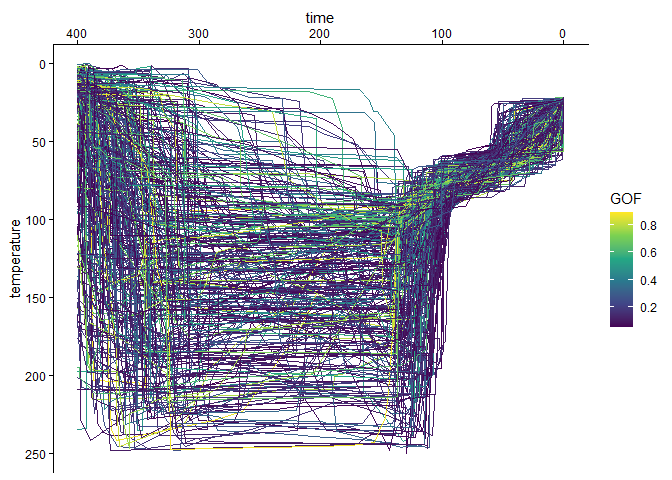
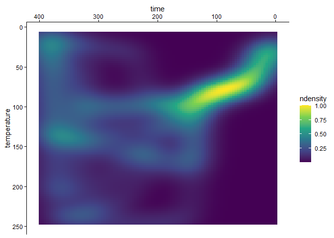
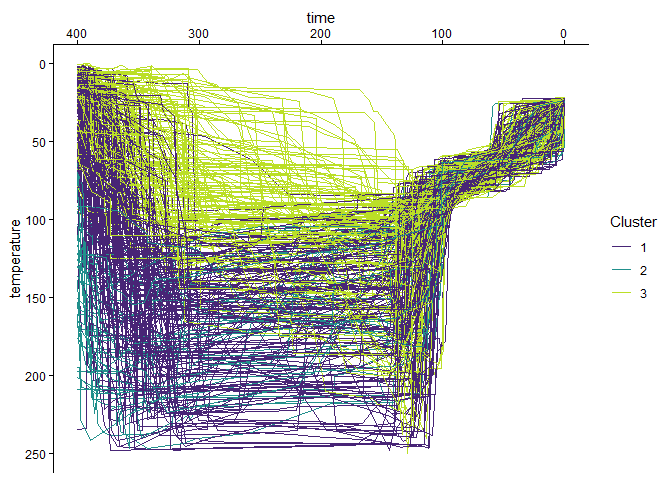

The goal of {thermoclustr} is to provide tools to further analyze thermal history models in thermochronology, including estimating cooling path densities, and path families.
Installation
You can install the development version of {thermoclustr} from GitHub with:
# install.packages("devtools")
devtools::install_github("tobiste/thermoclustr")Example
The following minimal example shows how to import data, visualize the paths and the path density as well as how to filter, and cluster the t-T paths into 3 path families.
library(thermoclustr)
library(dplyr)
library(ggplot2)
# load example dataset of a HeFTy model output
path2myfile <- system.file("112-73_30_H1_50-inv.txt", package = "thermoclustr")
tT_paths <- read_hefty(path2myfile)
# set `theme_classic()` as the default ggplot theme
theme_set(theme_classic())The HeFTy model contains the modeled paths, the initial model constraints, the weighted mean path, and some summary statistics on the mineral grains. {thermochlustr} imports the model as a list that contains the aforementioned features as list entries.
Thus, to visualize the paths with need to extract the path object from the imported model tT_paths:
# (Optional) Create a subset of interest of the data:
tT_paths_cropped <- crop_paths(tT_paths, time = c(0, 400), temperature = c(0, 250))
tT_paths_cropped$paths |>
ggplot(aes(time, temperature, color = Comp_GOF, group = segment)) +
geom_path() +
scale_color_viridis_c("GOF") +
scale_x_reverse(position = "top") +
scale_y_reverse()
The path density can be visualized using plot_path_density_filled():
plot_path_density_filled(tT_paths_cropped, geom = "raster") +
scale_x_reverse(position = "top") +
scale_y_reverse() +
scale_fill_viridis_c()
To cluster the data, the following steps are required:
# Cluster the paths
paths_cluster <- cluster_paths(tT_paths_cropped, k = 3)
# Join with path dataset
paths_clustered <- merge(
tT_paths_cropped$paths,
paths_cluster,
by = "segment"
)Finally, the visualization of the clustered t-T paths:
paths_clustered |>
ggplot(
aes(
x = time,
y = temperature,
color = cluster,
group = segment
)
) +
geom_path() +
scale_x_reverse(position = "top") +
scale_y_reverse() +
scale_color_viridis_d("Cluster", begin = .1, end = .9)
Documentation
The detailed documentation can be found at https://tobiste.github.io/thermoclustr/
Author
Tobias Stephan (tstephan@lakeheadu.ca)
Feedback, issues, and contributions
I welcome feedback, suggestions, issues, and contributions! If you have found a bug, please file it here with minimal code to reproduce the issue.